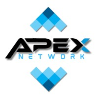
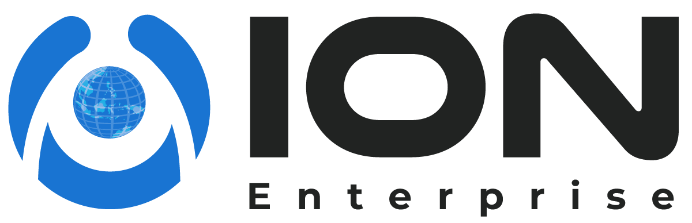
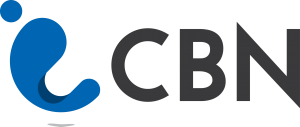
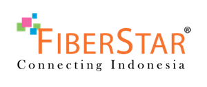
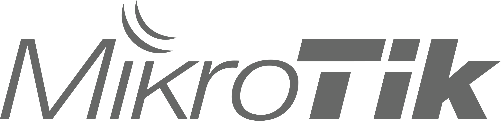

Integrated IT & Network Solution
PT. Inti Data Optima
Connecting Limitless Possibilities melalui solusi konektivitas, infrastruktur IT, sistem data, keamanan, dan layanan digital untuk mendukung pertumbuhan bisnis modern.
Network Planning
IT Managed Service
Digital Solution
INTERNET FIBER OPTIK
Nikmati Internet Fiber Optik Ultra Cepat & Unlimited
Kami menghadirkan layanan internet Fiber Optik dengan koneksi cepat, stabil, unlimited serta didukung layanan profesional untuk kebutuhan rumah, UMKM hingga perusahaan.
100%
Fiber Optic1 : 1
Simetris Download : UploadUnlimited
Internet Tanpa FUP
Tentang Perusahaan
Mitra teknologi untuk konektivitas dan digitalisasi bisnis.
PT. Inti Data Optima hadir untuk membantu organisasi membangun fondasi teknologi yang stabil, efisien, dan siap berkembang. Kami mendukung kebutuhan jaringan, perangkat IT, sistem data, serta layanan implementasi yang dapat disesuaikan dengan kondisi operasional setiap klien.
Dengan pendekatan konsultatif, kami tidak hanya menyediakan perangkat atau instalasi, tetapi juga membantu merancang solusi yang tepat guna, mudah dirawat, dan memberi dampak nyata bagi kegiatan bisnis.
Partners
Partners Kepercayaan Kami





Layanan Utama
Solusi lengkap untuk kebutuhan teknologi perusahaan.
Perancangan Jaringan
Desain topologi, instalasi router, switch, access point, segmentasi jaringan, dan optimasi koneksi antar lokasi.
Infrastruktur IT
Penyediaan dan pengelolaan perangkat server, komputer, storage, CCTV, perangkat kantor, serta kebutuhan pendukung operasional.
Cloud & Data
Integrasi data, backup, sinkronisasi sistem, dashboard monitoring, serta pengelolaan data agar lebih mudah diakses.
Keamanan Sistem
Firewall, kontrol akses, monitoring trafik, kebijakan keamanan, dan penguatan sistem untuk mengurangi risiko gangguan.
Maintenance
Perawatan berkala, troubleshooting, dokumentasi konfigurasi, audit perangkat, dan dukungan teknis sesuai SLA.
Digital Solution
Website company profile, aplikasi internal, otomasi laporan, dan sistem pendukung proses kerja perusahaan.
Keunggulan
Dirancang agar mudah dijalankan, dipantau, dan dikembangkan.
01
Analisis kebutuhan sebelum implementasi
Setiap solusi dimulai dari pemetaan kebutuhan, kondisi lapangan, prioritas bisnis, dan target operasional.
02
Dokumentasi jelas
Konfigurasi, topologi, kredensial operasional, dan panduan penggunaan disusun agar mudah dipahami tim internal.
03
Dukungan teknis responsif
Tim siap membantu proses instalasi, migrasi, perawatan, dan penanganan gangguan agar operasional tetap berjalan.
Area Solusi
Fleksibel untuk berbagai skala kebutuhan.
Kantor & Cabang
Jaringan internal, internet failover, perangkat kerja, VPN, dan monitoring koneksi antar cabang.
Sekolah & Kampus
WiFi area, manajemen pengguna, perangkat pembelajaran, server lokal, serta dukungan sistem akademik.
Retail & Hospitality
Koneksi kasir, CCTV, akses tamu, integrasi data penjualan, dan dukungan operasional multi lokasi.
UMKM & Enterprise
Website, aplikasi internal, otomasi administrasi, dashboard performa, dan modernisasi proses bisnis.
CARA BERLANGGANAN dalam 3 Langkah Mudah
Nikmati proses berlangganan yang cepat, mudah, dan didampingi oleh tim PT Inti Data Optima dari registrasi hingga internet aktif.
01
Registrasi
Hubungi kami atau isi formulir untuk memilih paket internet sesuai kebutuhan Anda.
Daftar Sekarang02
Instalasi
Tim teknisi kami akan melakukan pemasangan sesuai jadwal yang telah disepakati.
Jadwalkan03
Aktivasi
Internet aktif dan siap digunakan dengan koneksi cepat, stabil, dan unlimited.
Lihat Paket
Kontak
Siap membangun konektivitas yang lebih baik?
Ceritakan kebutuhan jaringan, infrastruktur, data, atau website perusahaan Anda. Tim PT. Inti Data Optima siap membantu dari perencanaan sampai dukungan operasional.